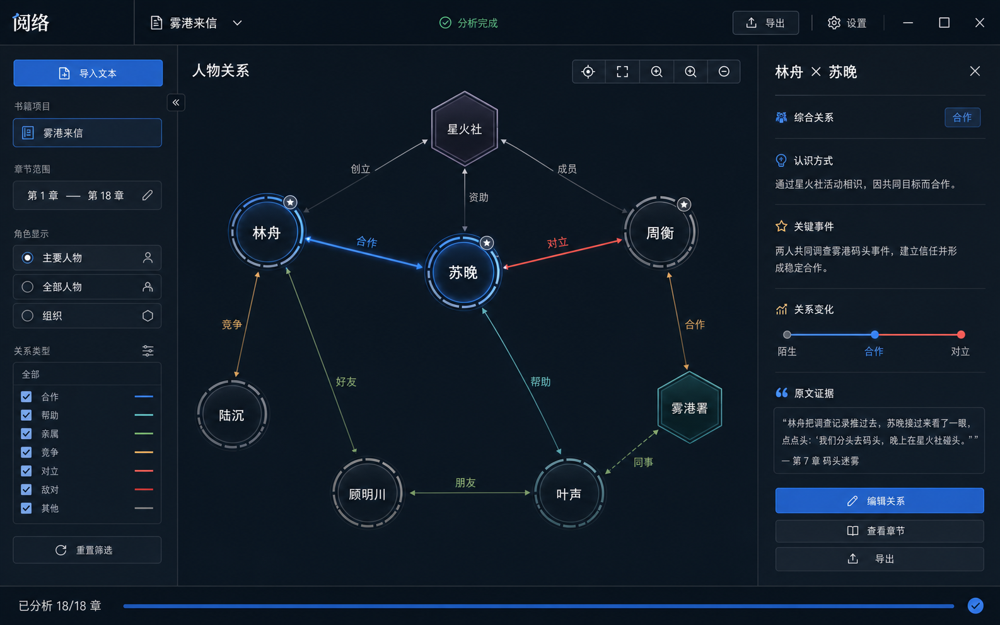

关系图浏览
按人物、组织和关系类型筛选网络，保留合作、竞争、亲属、敌对等类别的方向和颜色。

阅络优先服务中文小说阅读场景，关注章节进度、关系变化和原文证据，而不是把文本上传成在线资料库。
按人物、组织和关系类型筛选网络，保留合作、竞争、亲属、敌对等类别的方向和颜色。
切换已读章节范围，查看某一阅读阶段已经出现的人物关系，减少后文信息提前剧透。
每条关系保留出处和说明，并支持在本机继续修正人物、别名、关系类别和重要度。
第一版公开网站只提供介绍和下载。分析工具仍在用户自己的电脑上运行，文本、章节、关系和人工修正保存在本机运行数据目录中。
Windows 内测版是独立压缩包。下载后解压，按包内说明启动，本地程序会在浏览器中打开关系图界面。
下载压缩包后完整解压，不要只拖出单个可执行文件。
双击包内启动入口，等待健康检查通过后自动打开浏览器。
如需分析新文本，在本地程序设置中配置模型密钥；官网不会接收或保存这些信息。